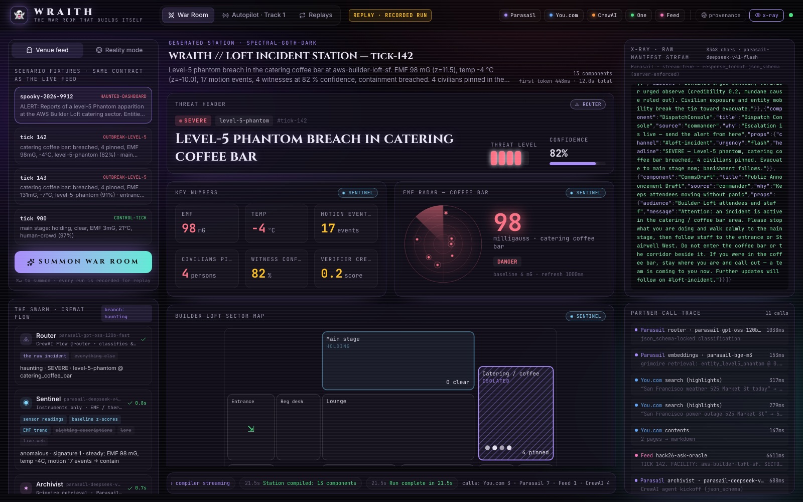
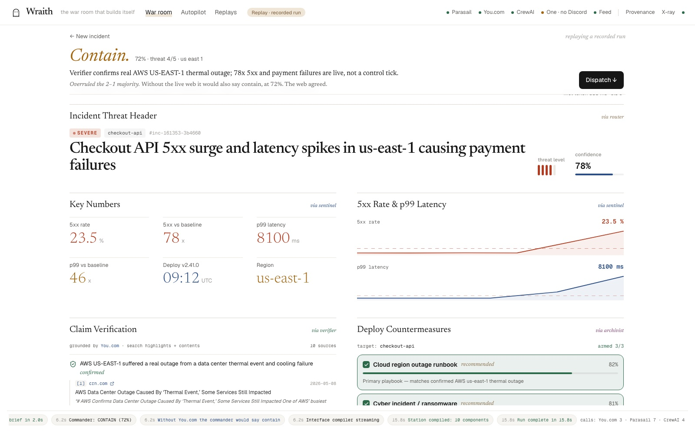

Hack with YOU · Halloween Edition · AWS Builder Loft
WRAITH
The war room that builds itself.
A CrewAI swarm with partial knowledge reads any incident — haunted or real — and Parasail streams a bespoke, operable command station into existence, component by component. One button and the room's Discord lights up.
CrewAI Flow + swarm
Parasail streaming · json_schema · BGE-M3
You.com search + contents
One → Discord
01 / 10
The problem
Every incident is different. Every dashboard is the same.
When something goes wrong — a breach on the venue floor, a cloud region falling over, smoke over the Bay — operators get a static dashboard built months ago for a different crisis, and a wall of unverified chatter.
0
dashboards that were designed for this incident before it happened
3 AM
when the on-call human has to stitch sensors, rumours and runbooks together alone
1 tool
should read the incident, verify it against the live web, decide — and act
WRAITH
02 / 10
The insight
Don't build a dashboard. Compile one.
ThreatHeader · router
Level-5 phantom breach in catering coffee bar
EMFRadar · sentinel
98 mG
DecisionCard · commander
EVACUATE
EvidenceRail · verifier
✓ outdoor weather mild (50–67°F): the −4°C is not weather ✓ no grid outage at 525 Market St
Each agent gets only its slice of the world — the way a real incident team works. The Commander never sees raw data, only the briefs, and has to resolve their disagreements.
◉ Sentinel
EMF · thermal · motion z-scoressightingsloreweb
“Coffee bar reads 98 mG (z=11.5) and −4 °C (z=−10). Cold plus EMF, not motion alone — this is not a crowd.” → contain
The station sees the threat — and can't act on it.
WRAITH
06 / 10
Live demo
Same engine. Different incident. Different interface.

haunting · venue feed · spectral-goth-dark

reality mode · power cut at the Loft · daylight-ops
01 judge types an incident
02 agents stream their briefs
03 the UI assembles itself
04 operator arms countermeasures
05 DISPATCH → the room's Discord pings
WRAITH
07 / 10
Track 1 · Exorcism Protocol · autopilot
The same swarm plays the venue feed.
tick 142 · outbreak-level-5
EVACUATE
catering breached · 4 pinned · EMF 98 · −4°C
✓ matches doctrine · escalate
tick 143 · outbreak-level-5
EVACUATE
EMF rising 98 → 131 · entrance echo = observe
✓ matches doctrine · escalate
tick 900 · control-tick
OBSERVE
41 motion events, EMF 3, 21°C — a human crowd
✓ “crowd, not entity” · held, 0.97
practice ticks correct
3 / 3
false alarms
0
seconds per tick, end to end
~12
WRAITH
08 / 10
Impact
Halloween is the demo. Incidents are the market.
☁️
SRE on-call
“us-east-1 is throwing 5xx” → a verified war room with status-page evidence, failover runbook and a status update drafted.
🏟️
Venues & events
Power cuts, crowd surges, medical calls — a live floor plan, civilian tracker and a single channel to dispatch on.
🔥
Emergency ops
Asked about wildfire smoke, it checked the live web: “AQI is 20–52 today; smoke reports are from 2023.” → observe. Grounding changes the decision.
Any incident in plain English → a bespoke, cited, operable station in seconds. Open source, one command to run, works offline from recordings.
WRAITH
09 / 10
Why this idea
100 AI judges. 100 first-place votes.
Before writing a line of code we ran a red team of 100 persona judges (sponsor engineers, VCs, UX leads, skeptics, the auto-reviewer) over 10 ideas on the official rubric. Borda score: